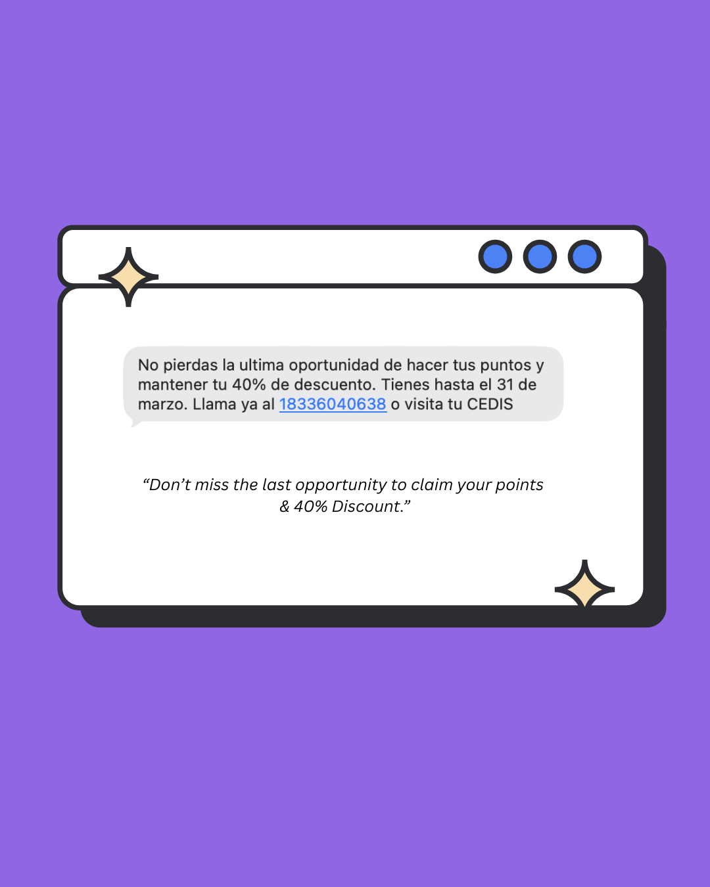
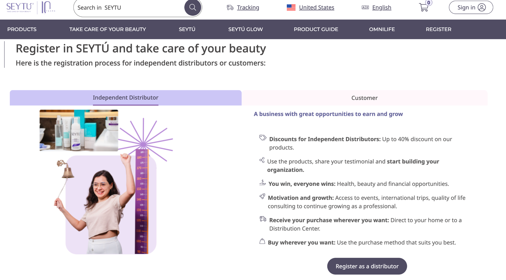

CASE STUDY / 01
Inactive Customer
Reactivation Campaign
A bilingual, multi-channel marketing campaign for Omnilife USA and SEYTÚ USA designed to re-engage customers who had been inactive for several months and help eligible customers regain access to product discounts of up to 40%.
Business goal
Re-engage inactive customers, encourage repeat purchases, increase retention, and promote eligible distributor re-enrollment before a limited-time deadline.
Audience
U.S. English- and Spanish-speaking customers inactive for two or more months, without an active product discount, and eligible to re-enroll.
Channels
SMS · Email · WhatsApp group messaging · Facebook groups · SEYTÚ registration landing page
Campaign outcomeRenewed engagement
Renewed engagement
with measurable lift.
38.9%
increase in sales driven by SMS outreach
46.8%
increase in clicks and web sales
My role
- Wrote and adapted bilingual English and Spanish campaign copy.
- Scheduled messages and updated campaign calendars, deadlines, and deployment schedules.
- Coordinated campaign graphics, creative assets, internal reviews, and approval workflows.
- Reviewed links, disclaimers, and final campaign messages before deployment.
- Collaborated with Mexico- and U.S.-based marketing teams.
- Maintained consistent messaging across customer touchpoints and supported the registration process.

